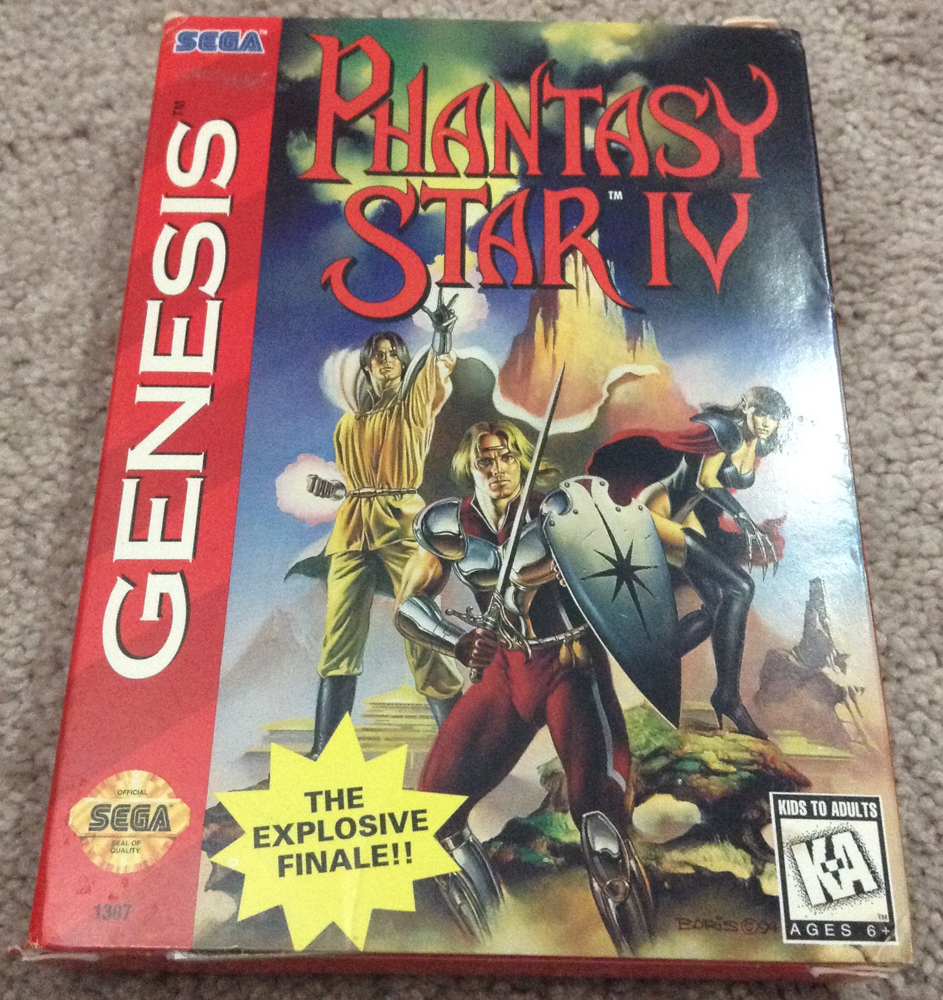

Phantasy Star IV Review
January 20th 2016
There is one reason I say the Sega Genesis is a better console than the Super Nintendo, and that reason is Phantasy Star. A series of games that beats what is often considered the best collection of role playing games of all time in my opinion must be really good right? Well it is, and what might be the best of the series is Phantasy Star IV.
Background: In 1987 Sega released a role playing game called Phantasy Star which I can best describe as Star Wars meets Disney. The game follows Alis, Odin, Noah and Myau through the Algol Star System on a quest to destroy the evil King Lassic. The first Phantasy Star had the best story and characters and the game mechanics were pretty good despite a few flaws.
The game was followed up with Phantasy Star II which was based long after the original game. This game unlike the first allows you to interchange players in your party of four. In the sequel you are fighting Mother Brain which is a corrupted computer system that was designed to control the environment. The game does several new things, removes some old thing and keeps the general idea of the first game.
Phantasy Star III is often considered the worst of the four original games, however it is still a fun game. The game makes a series of changes and does things much differently than the other two games, however still feeling like Phantasy Star. This game has little to do with the first two games plots, however the concepts in this game speaks for itself.
Phantasy Star IV came out in 1993 is Japan and 1995 in North America. It is most similar to the original game because while the second and third game did many things completely different, this game feels like the same style and mechanics as the original but improved. I originally played this game without playing the first three games and surprisingly it did not affect the quality of the game. After playing the first three games and restarting Phantasy Star IV I found new things and references to the old games. If you want to jump right into any game in the series, go ahead because series chronology won't get in your way. However, if you plan to play them all I would start at the first game.
Plot: Phantasy Star IV follows a young monster hunter named Chaz as well as his friends and mentors he meets along his journey. He lives on the planet Motavia which is being overrun by monsters and it is the job of hunters to destroy these monsters. While investigating the cause of the monster outbreak, Chaz is lead across the Algol Star Systems planets and satellites to solve the problem of the monsters and to restore balance to the star system. The story is told with in-game player dialog as well as dialog to anime style cut scenes.
Gameplay: Phantasy Star IV is a very quintessential role playing game with random turn based combat, exploring and gathering clues from non player characters. The game has several planets and satellites to explore as well as dungeons. Areas of the game can be unlocked by finding equipment that can transport you to that area (Space Ship, Ice Digger and more). The next step in the game can be found by talking to people in towns, there is also a option to have your players talk to each other and discuss the next place to visit. I like how the towns people are actually helpful unlike some other RPGs I've played recently.
Your party of travelers changes with the story unlike Phantasy Star II which lets you choose at any time. Other than one point in the end of the game, you can't pick your players. Each of your players have different abilities. Some have magic attacks, some have healing, some have attacks with weapons and most have a mix of any numbered of the mentioned. I will explain battles a little later.
One improvement over the original Phantasy Star in this sequel is that if a party member dies you don't have to heal them in a church, you can go to an inn to heal them completely. In the original game if you died you had to be resurrected in a church and then healed in an inn.
Story, World, Style: Phantasy Star IV is a very colorful game and one of the best looking game on the Sega Genesis. The towns are very detailed as well as all the characters and enemies. During attacks there are fairly detailed animations that reflect the types of attack you are performing.
The real highlight of this game are the anime cut scenes. There are anime scenes to match the dialog so it feels almost like a movie. The cut scenes are not actually live video but pictures with music and text to go along with it.
The story in Phantasy Star IV is very involving and with the anime cut scenes you actually care about these characters because it better conveys what they are feeling after each major event in the game. I like how the game ties into past entries in the series which is fun for fans of the franchise. The story is also funny at times and it is fun to play through with these characters rather than generic boring players. I really think that the story is just as important to the quality as the actual game play.
Music: The music in Phantasy Star IV is phenomenal. One of the few games I actually bought the soundtrack to (with the series box set). From the title music to the dungeons you will be mesmerized and intrigued by the music. There are a wide variety of songs for the overworlds, towns, buildings, dungeons and cut scenes. One neat part of the soundtrack is that songs from the original Phantasy Star were brought back and given a 16-bit upgrade. The song titled PS1 Dungeon Arrange 2 is my personal favorite and gets my excited when every I hear it, and there are plenty of songs that are almost as good.
Menu: One thing I find that Phantasy Star IV does better than its predecessors as well as many other RPGs is the menu. It is one of the most efficient menus in a game I've ever seen, especially for that era. The menu makes buying weapon and armour upgrades much easier and quicker. You'll have the ability to see what weapons can be equipped on what player before buying them. This feature can save you buying weapons if nobody in your party can equip them. The menu also helps you while equipping these weapons to your players. If you are customizing a players weapons and armor you can choose from a list of items that can be equipped on the player and only those items. The original game did not have this feature. You can also see what the change in attack or defense will be before equipping items instead of just trying things on.
Overall the menu has no major problems, which is great because I really hate it when a poor menu brings down a great RPG. Even a small inconvenience can get annoying during long periods of game play and I'm really glad the developers took the time to make a good menu.
Battles: The battles in Phantasy Star IV keep what the previous games did so well and adds a few new and great things. During a battle each of your five characters can use an attack, technique, skill, item or defense.
Attack is a basic attack that won't cost TP (technique points), it does a fair amount of damage reflecting the players level and weapon. Techniques are a sort of magic spell, these cost TP to perform. I like to think of techniques less of like magic and more like "The Force" from Star Wars (which the first Phantasy Star is similar to). TP points can be replenished by staying at the Inn. Techniques can be used for healing, attacks or defense. A players skills are similar to techniques but instead of costing a certain amount of TP points there are a limited number of times the player can use the skill before needing to rest at an inn to replenish. The amount of times a skill can be used before resting increases as the player levels up. Players can also use items during battle, mostly for healing. There is also an option to defend yourself if you choose not to attack. Any damage dealing moves can be dealt to one enemy or all the enemies you are facing at once, depending on what attack.
One of the coolest upgrades to the battle system in Phantasy Star IV is the ability to launch combo attacks. Combo attacks are when two or more players combine their attacks to perform a very strong attack. There are 14 known combo attacks in the game and discovering them is really fun. You can always go online to discover all of them if you really want. One downside to combo attacks is they can be hard to perform because the individual characters attacks need to happen in a certain order and it is not easy to control the order as it is based on player/enemy speed level. Luckily, there is a neat feature called the macro that can help with this.
The macro lets you preplan attack for your players. This can save you time if you develop a strategy and just want to perform it with the press of a button instead of going thought each player. It can also help you perform a combo attack because you'll know the order of moves to perform the attack. Once you save the combo attack to the macro you just have to hope the enemy does not attack between two of your players needed for the combo attack, because it will split the sequence and your players will attack normally.
Conclusion: If you like the first few Phantasy Star games then there is no reason you won't like this game better. The games world, towns and characters look great for the 16-bit era. The menu and macro help make the game smooth and free of annoying things that most RPGs have. The anime cut scenes are neat and help you get invested in the story. Most of all the battles are fun and game play will keep you wanting to play more and more.